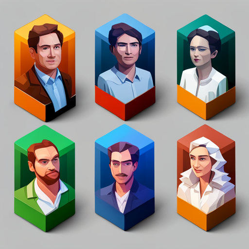

小结:一人企业就是「将自己产品化」

一人企业的成功关键,就是把自己转变成一个可复制、可规模化的产品。
什么是产品?产品就是把解决问题的价值创造过程系统化、产品化。任何人都希望获得稳定的被动收入,但要获得被动收入,就必须持有可以创造价值的资产。那么如何创造这样的资产呢?
方法就是把自己的独特价值变成产品的形式,实现可复制和可规模化。
以我自己为例,我有写作和思维导图等方面的专长。如果只是写些文章发在公众号,那就只能靠劳动换钱。但如果我把这些知识和技巧系统化,做成绘本、视频课程、专栏等资产形式,就可以实现被动收入,并且可以不断优化产品,使之规模化。
再比如我认识一个自由职业者,他的主业是uilder,业余时间非常喜欢烹饪。有一天他突发奇想,如果把自己的烹饪技巧也制成视频教程会怎样?于是他买了摄像设备,在业余时间录制了20节课程,上传到了视频网站,结果反响非常好,后来竟然月入过万。
所以一人企业的精髓就是将自己的独特价值转变成产品的形式。你可能擅长写写作、编程、设计、运动、手工、游戏等,都可以通过产品化实现规模化。
比如一个健身教练,他可以制作健身视频、写健身电子书、销售diet meal、开实体工作室等。一个程序员可以销售源代码、建立代码教学网站、开发SaaS工具等。总之方法很多,关键是要从将自己当作产品的视角思考。
产品不等于企业,一人创业也不一定要注册公司。只要你有产出价值的资产,那你就已经在经营一人企业了。多产出一些作品,不断优化,然后用新媒体、电商平台等手段让它们为你效力。这就是新时代一人企业的运行规则。
一人企业也有很多可资仿效的优秀案例。比如Pat Flynn通过智能被动收入构建了自己的一人企业,靠在线课程、会员网站、软件工具等资产获得了极高的被动收入。Michelle Schroeder-Gardner通过博客和电子书也达到了相似的规模。一人企业完全可以达到百万美元的规模,关键是要善于将自己产品化。
所以,想要成功经营一人企业,就要充分利用今天的机遇,将自己的独特价值转化为可以被复制和扩展的产品形式。不要被传统模式束缚,要用产品化的视角思考一人企业,你也一定可以创造出属于自己的事业和被动收入!